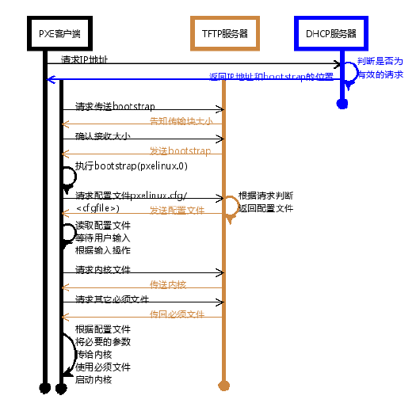
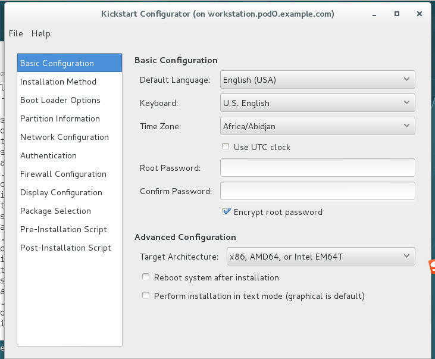

网络无人值守安装
作用
常见的引导有开机引导和光驱引导以及U盘引导，但是在我们生产环境里不会一台一台装，都是希望使用之用批量安装的方式，解决的方案就是使用网络方式安装，实现批量化的操作。
流程简介
1）DHCP：用以分配ip地址
2）预启动施行环境（PXE）：通过网卡引导计算机
3）PXELINUX：提供引导文件及内核等文件
4）kickstart文件：提供安装介质

DHCP 部署
DHCP 简介
DHCP是DynamicHostConfigurationProtocol的缩写。
它的前身是BOOTP。BOOTP原本是用于无盘主机连接的网络上面的：网络主机使用BOOTROM而不是磁盘起动并连接上网络﹐BOOTP则可以自动地为那些主机设定TCP/IP环境。但BOOTP有一个缺点：在设定前须事先获得客户端的硬件MAC地址，而且与IP的对应是静态的。换而言之，BOOTP非常缺乏”动态性”，若在有限的IP资源环境中，BOOTP的一对一的对应关系会造成非常大的浪费。DHCP可以看作是BOOTP的增强版本﹐它分为两个部份：服务器端和客户端。所有的IP地址设定资料都由DHCP服务器集中管理﹐并负责处理客户端的DHCP要求；而客户端则会使用从服务器分配下来的IP环境资料。比较起BOOTP，DHCP透过“租约”的概念，有效且动态的分配客户端的TCP/IP设定，而且作为兼容考量，DHCP也完全照顾了BOOTPClient 的需求。
当DHCP 客户端第一次登录网络的时候，也就是客户发现本机上没有任何 IP 资料，它会向网络发出一个 DHCPDISCOVER封包。因为客户端还不知道自己属于哪一个网络，所以封包的来源位址会为 0.0.0.0 ，而目的位址则为 255.255.255.255 ，然后再附上DHCPDISCOVER 的信息，向网络进行广播。 当 DHCP 服务器监听到客户端发出的DHCPDISCOVER 广播后，它会从那些还没有租出的IP地址范围内按一定顺序选出一个IP 地址 ，连同其它TCP/IP 设置，回应给客户端一个DHCPOFFER 封包。由于客户端在开始的时候还没有 IP 位址，所以在其DHCPDISCOVER 封包内会带有其MAC 地址信息，并且有一个 XID 编号来辨别该封包，DHCP 服务器回应的DHCPOFFER封包则会根据这些资料传递给要求租约的客户。根据服务器端的设置，DHCPOFFER封包会包含一个租约期限的信息。如果客户端收到网络上多台DHCP 服务器的回应，只会挑选其中一个DHCPOFFER(通常是最先抵达的那个)，并且会向网络发送一个DHCPREQUEST广播封包，告诉所有DHCP 服务器它将指定接受哪一台服务器提供的 IP 地址。同时，客户端还会向网络发送一个ARP 封包，查询网络上面有没有其它机器使用该 IP 地址；如果发现该 IP 已经被占用，客户端则会送出一DHCPDECLINE 封包给 DHCP 服务器，拒绝接受其 DHCPOFFER，并重新发送 DHCPDISCOVER 信息。 当 DHCP 服务器接收到客户端的 DHCPREQUEST 之后，会向客户端发出一个DHCPACK 回应，以确认 IP 租约的正式生效，也就结束了一个完整的DHCP 工作过程。
注意：dhcp是不能跨物理网络的，同样，如果说同一个环境中有多个dhcp服务器，则会选择使用最先返回结果的那个dhcp服务器提供的IP地址。
所以在实验环境里，我们统一关闭eth0，以192.168.0.0/24网段的服务器来进行试验。
基础环境配置如下：
servera作为网关，serverg作为配置整体服务的服务器。
1）serverg关闭eth0
[kiosk@foundation0 Desktop]$ ssh root@172.25.0.10
Last login: Thu Dec 8 08:02:03 2016 from 172.25.0.250
[root@servera ~]# ssh root@192.168.0.16
The authenticity of host '192.168.0.16 (192.168.0.16)' can't be established.
ECDSA key fingerprint is 0b:1f:3b:13:2e:d2:10:53:4c:3d:c8:f4:86:24:d3:5e.
Are you sure you want to continue connecting (yes/no)? yes
Warning: Permanently added '192.168.0.16' (ECDSA) to the list of known hosts.
root@192.168.0.16's password:
Last login: Thu Dec 8 08:01:22 2016 from 172.25.0.250
[root@serverg ~]# vim /etc/sysconfig/network-scripts/ifcfg-eth1
DEVICE=eth1
BOOTPROTO=static
ONBOOT=yes
TYPE=Ethernet
USERCTL=yes
IPV6INIT=no
IPADDR=192.168.0.16
GATEWAY=192.168.0.10
NETMASK=255.255.255.0
[root@serverg ~]# systemctl restart network
[root@serverg ~]# route -n
Kernel IP routing table
Destination Gateway Genmask Flags Metric Ref Use Iface
0.0.0.0 192.168.0.10 0.0.0.0 UG 0 0 0 eth1
172.25.0.0 0.0.0.0 255.255.255.0 U 0 0 0 eth0
192.168.0.0 0.0.0.0 255.255.255.0 U 0 0 0 eth1
192.168.1.0 0.0.0.0 255.255.255.0 U 0 0 0 eth2
[root@serverg ~]# ifdown eth0
|
2）servera配置防火墙规则，让serverg访问172.25.254.250的数据包能够出去
[root@servera ~]# vim /etc/sysctl.conf
net.ipv4.ip_forward = 1
[root@servera ~]# sysctl -p
net.ipv4.ip_forward = 1
[root@servera ~]# iptables -t nat -A POSTROUTING -s 192.168.0.0/24 -j SNAT --to-source 172.25.0.10
[root@serverg ~]# mount 172.25.254.250:/content /mnt
|
DHCP 配置
1）装包
[root@serverg mnt]# yum -y install dhcp
Loaded plugins: langpacks
rhel_dvd | 4.1 kB 00:00
(1/2): rhel_dvd/group_gz | 134 kB 00:00
(2/2): rhel_dvd/primary_db | 3.4 MB 00:00
Resolving Dependencies
--> Running transaction check
---> Package dhcp.x86_64 12:4.2.5-36.el7 will be installed
--> Finished Dependency Resolution
Dependencies Resolved
================================================================================
Package Arch Version Repository Size
================================================================================
Installing:
dhcp x86_64 12:4.2.5-36.el7 rhel_dvd 510 k
Transaction Summary
================================================================================
Install 1 Package
Total download size: 510 k
Installed size: 1.4 M
Downloading packages:
dhcp-4.2.5-36.el7.x86_64.rpm | 510 kB 00:00
Running transaction check
Running transaction test
Transaction test succeeded
Running transaction
Installing : 12:dhcp-4.2.5-36.el7.x86_64 1/1
Verifying : 12:dhcp-4.2.5-36.el7.x86_64 1/1
Installed:
dhcp.x86_64 12:4.2.5-36.el7
Complete!
|
2）dhcp的配置
[root@serverg mnt]# cp /usr/share/doc/dhcp-4.2.5/dhcpd.conf.example /etc/dhcp/dhcpd.conf
cp: overwrite ‘/etc/dhcp/dhcpd.conf’? y
[root@serverg mnt]# vim /etc/dhcp/dhcpd.conf
allow booting; # 定义能够pxe启动
allow bootp; # 定义支持bootp
option domain-name "pod0.example.com";
option domain-name-servers 172.25.254.254;
default-lease-time 600; # 租约时间
max-lease-time 7200;
log-facility local7;
subnet 192.168.0.0 netmask 255.255.255.0 {
range 192.168.0.50 192.168.0.60; # 地址池范围
option domain-name-servers 172.25.254.254; # DNS服务器地址
option domain-name "pod0.example.com"; # 域名
option routers 192.168.0.10; # 网关
option broadcast-address 192.168.0.255; # 广播地址
default-lease-time 600; # 租约时间
max-lease-time 7200;
next-server 192.168.0.16; # tftp的服务器ip地址
filename "pxelinux.0"; # 下载的引导文件的名字，pxe环境的文件名字都是pxelinux.0、
}
class "foo" {
match if substring (option vendor-class-identifier, 0, 4) = "SUNW";
}
shared-network 224-29 {
subnet 10.17.224.0 netmask 255.255.255.0 {
option routers rtr-224.example.org;
}
subnet 10.0.29.0 netmask 255.255.255.0 {
option routers rtr-29.example.org;
}
pool {
allow members of "foo";
range 10.17.224.10 10.17.224.250;
}
pool {
deny members of "foo";
range 10.0.29.10 10.0.29.230;
}
[root@serverg mnt]# systemctl restart dhcpd
|
TFTP的配置
PXE(Preboot Execution Environment)是由Intel设计的协议，它可以使计算机通过网络启动。协议分为客户端和服务器两端，PXE 客户端在网卡的ROM中，当计算机引导时BIOS把PXE客户端调入内存执行，并显示出命令菜单，经用户选择后，PXE客户端将放置在远端的操作系统通过网络下载到本地运行。PXE协议的成功运行需要解决以下两个问题：第一，IP由谁和如何分配分配;第二，客户端所需系统内核和其他文件从哪里得到。
对于第一个问题，可以通过DHCP 服务解决，由DHCP 服务来给PXE 客户端分配一个IP地址，同时在配置DHCP Server时，需要增加相应的PXE特有配置。比如告诉PXE客户端所需文件到哪里找。至于第二个问题，在PXE 客户端所在的ROM中，已经存在了TFTP 客户端。PXE客户端使用TFTP 客户端，通过TFTP协议到TFTP 服务器上下载所需的文件。
1）tftp的安装
[root@serverg mnt]# yum -y install tftp-server
[root@serverg mnt]# ll -d /var/lib/tftpboot/
drwxr-xr-x. 2 root root 6 Jan 27 2014 /var/lib/tftpboot/
|
2）配置pxelinux.0相关文件
[root@serverg mnt]# yum -y install syslinux # pxelinux.0文件由该软件提供
[root@serverg mnt]# cp /usr/share/syslinux/pxelinux.0 /var/lib/tftpboot/ # 将pxelinux.0的引导放至共享目录下。
[root@serverg tftpboot]# mkdir pxelinux.cfg
[root@serverg tftpboot]# cd pxelinux.cfg/
[root@serverg pxelinux.cfg]# ls
[root@serverg pxelinux.cfg]# touch default # 建立pxelinux的相关配置文件，配置文件名称固定为default
[root@serverg pxelinux.cfg]# pwd
/var/lib/tftpboot/pxelinux.cfg
[root@serverg pxelinux.cfg]# vim default
default vesamenu.c32 # 提供图形界面
timeout 60 # 超时时间
display boot.msg # 介绍信息
menu background splash.jpg # 背景图片
menu title Welcome to Global Learning Services Setup! # 大标题
label local # 标签
menu label Boot from ^local drive # 标题
menu default # 指定超时时间里没选标题，默认从那个标题进入
localhost 0xffff # 本地启动位置
label install
menu label Install rhel7
kernel vmlinuz # 内核所在位置
append initrd=initrd.img ks=http://192.168.0.16/myks.cfg # 指定initrd文件及后续kickstart文件所在位置
|
3）相关文件放置到/var/lib/tftpboot
[root@serverg ~]# cd /mnt/rhel7.1/x86_64/dvd/isolinux
[root@serverg isolinux]# cp boot.msg vmlinuz vesamenu.c32 initrd.img /var/lib/tftpboot/
|
4）启动TFTP服务端
[root@serverg html]# vim /etc/xinetd.d/tftp
service tftp
{
socket_type = dgram
protocol = udp
wait = yes
user = root
server = /usr/sbin/in.tftpd
server_args = -s /var/lib/tftpboot
disable = no
per_source = 11
cps = 100 2
flags = IPv4
}
[root@serverg html]# systemctl restart xinetd
|
kickstart文件的部署
1）编辑kickstart自动应答文件，该文件可以自己手动编辑也可通过图形化界面编辑
图形化编辑工具
[root@workstation ~]# yum -y install system-config-kickstart
[root@workstation ~]# system-config-kickstart
|

也可以直接修改kickstart文件
[root@serverg ~]# cp anaconda-ks.cfg /var/www/html/
[root@serverg ~]# cd /var/www/html/
[root@serverg html]# mv anaconda-ks.cfg myks.cfg
[root@serverg html]# vim myks.cfg
#version=RHEL7
# System authorization information
auth --enableshadow --passalgo=sha512
# Reboot after installation
reboot # 装完系统之后是否重启
# Use network installation
url --url="http://192.168.0.16/dvd/" # 网络安装介质所在位置
# Use graphical install
#graphical
text # 采用字符界面安装
# Firewall configuration
firewall --enabled --service=ssh # 防火墙的配置
firstboot --disable
ignoredisk --only-use=vda
# Keyboard layouts
# old format: keyboard us
# new format:
keyboard --vckeymap=us --xlayouts='us' # 键盘的配置
# System language
lang en_US.UTF-8 # 语言制式的设置
# Network information
network --bootproto=dhcp # 网络设置
network --hostname=localhost.localdomain
#repo --name="Server-ResilientStorage" --baseurl=http://download.eng.bos.redhat.com/rel-eng/latest-RHEL-7/compose/Server/x86_64/os//addons/ResilientStorage
# Root password
rootpw --iscrypted nope
# SELinux configuration
selinux --disabled
# System services
services --disabled="kdump,rhsmcertd" --enabled="network,sshd,rsyslog,ovirt-guest-agent,chronyd"
# System timezone
timezone Asia/Shanghai --isUtc
# System bootloader configuration
bootloader --append="console=tty0 crashkernel=auto" --location=mbr --timeout=1 --boot-drive=vda
# 设置boot loader安装选项 --append指定内核参数 --location 设定引导记录的位置
# Clear the Master Boot Record
zerombr # 清空MBR
# Partition clearing information
clearpart --all --initlabel # 清空分区信息
# Disk partitioning information
part / --fstype="xfs" --ondisk=vda --size=6144 # 设置根目录的分区情况
%post
echo "redhat" | passwd --stdin root
useradd carol
echo "redhat" | passwd --stdin carol
# workaround anaconda requirements
%end
%packages
@core
%end
|
配置httpd的共享服务，将myks.cfg和安装介质放置到/var/www/html目录下
[root@serverg ~]# yum -y install httpd
[root@serverg rhel7.1]# cd /var/www/html/
[root@serverg html]# ls
myks.cfg
[root@serverg html]# chown apache myks.cfg
[root@serverg html]# mkdir dvd
[root@serverg html]# cd /mnt/rhel7.1/x86_64/isos
[root@serverg isos]# mount -o loop rhel-server-7.1-x86_64-dvd.iso /var/www/html/dvd/
[root@serverg html]# systemctl restart httpd
|
至此，整体安装完成。
打开install虚拟机测试，测试结果略